Refiore

Refinar momentos
Refiore es una joyería artesanal de oro y diamantes. El nombre viene de la expresión «refinar oro» y la identidad parte del cine: la vida como una película dirigida por uno mismo, donde cada escena merece ser celebrada. La línea que contornea cada anillo representa la continuidad de esa historia y se convierte en el hilo gráfico de toda la marca.
- Desafío
- Lanzar una joyería artesanal en un segmento dominado por códigos de lujo fríos y distantes. Refiore necesitaba transmitir sofisticación y calidad de alta gama sin perder cercanía: joyas para momentos reales, no solo para la vitrina.
- Solución
- Una identidad que trata la marca como una película: logotipo en serif clásica de espaciado amplio, monograma RFR grabado en las piezas, una paleta de cuatro tonos (pasión, tinta, línea y papel) y una línea fina que atraviesa las composiciones como el contorno de un anillo. La voz habla en lenguaje de guion: «Escreva a sua história», «Seu roteiro», «Romantize sua vida».
- Mi rol
- Parte del trío creativo del proyecto en Gauja Lab, junto a Uel Molon y Gabriel Motter: concepto, dirección creativa y decisiones de identidad tomadas en conjunto.
- Resultado
- Un sistema completo para el lanzamiento, con la misma narrativa en cada punto de contacto: papelería, packaging, piezas impresas, publicidad exterior y web.
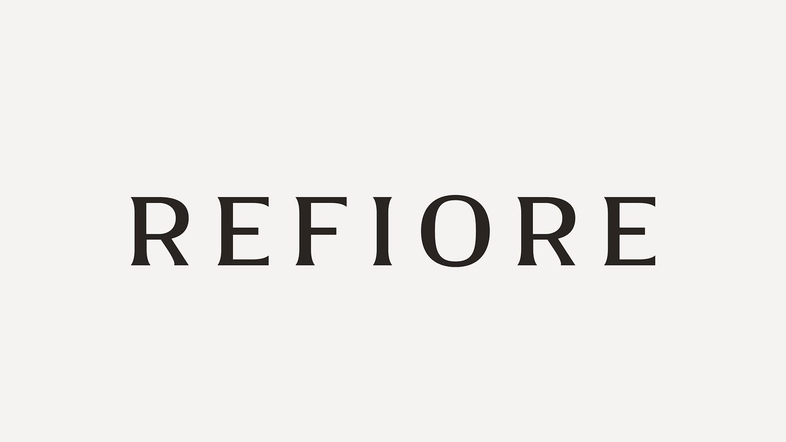
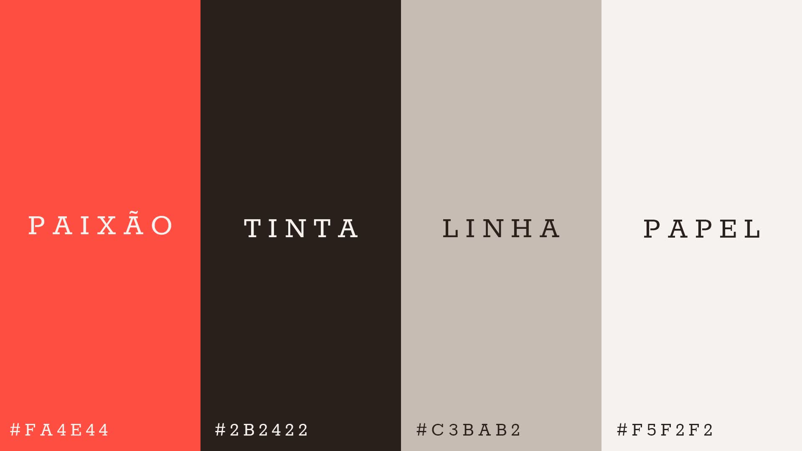
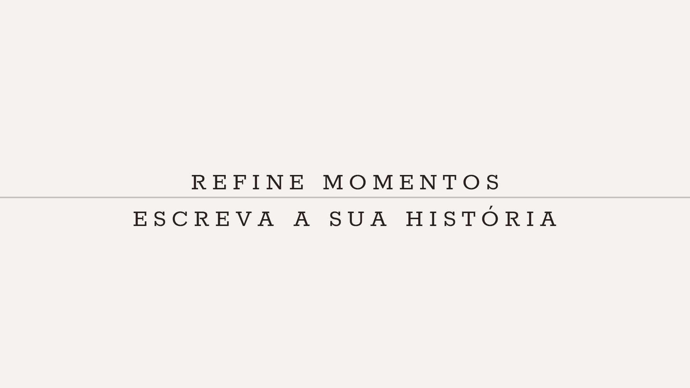

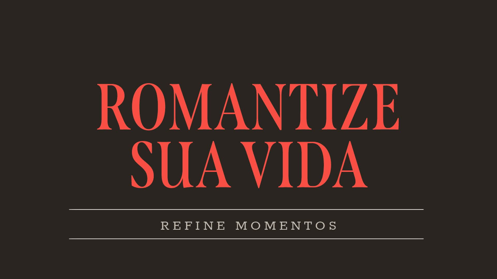
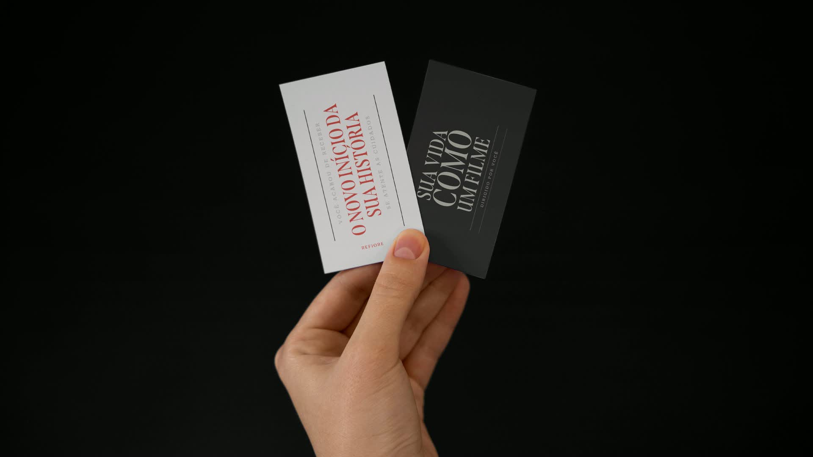
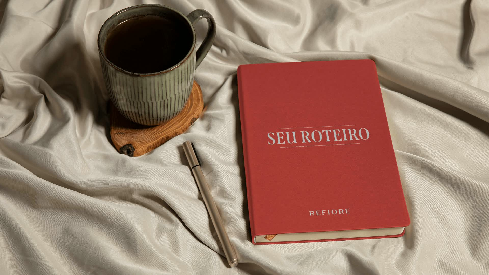
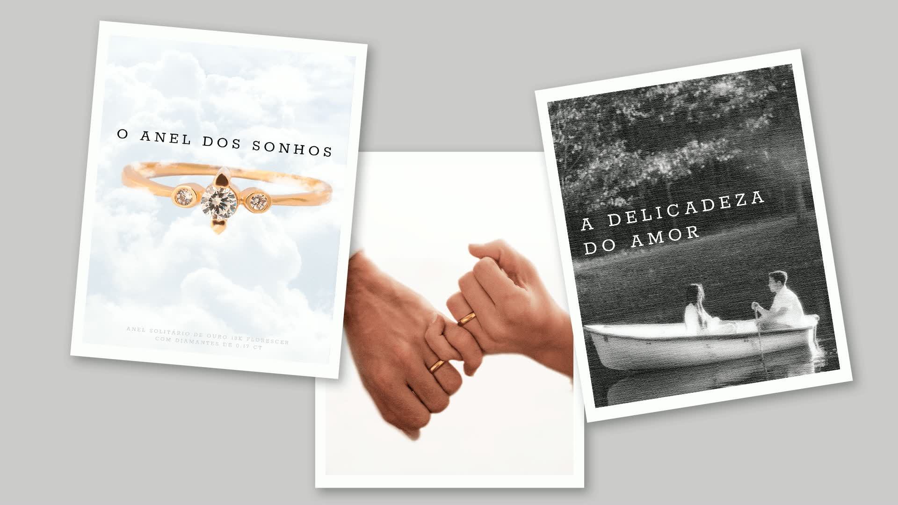
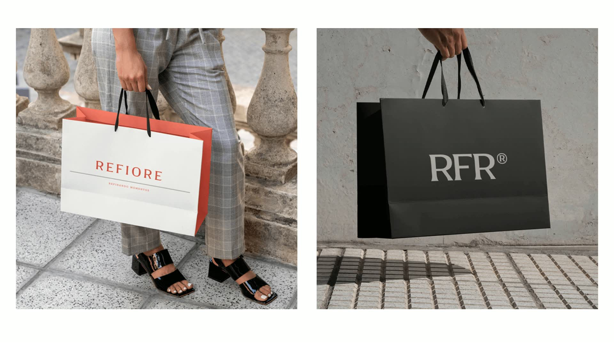
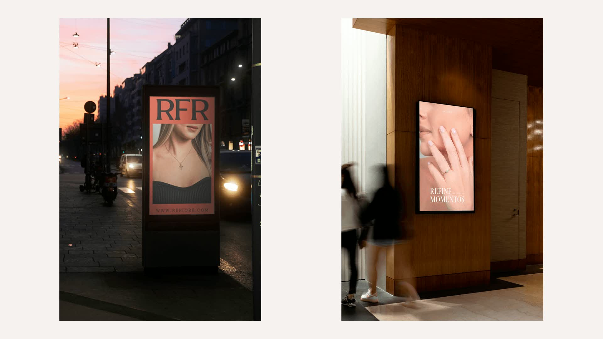
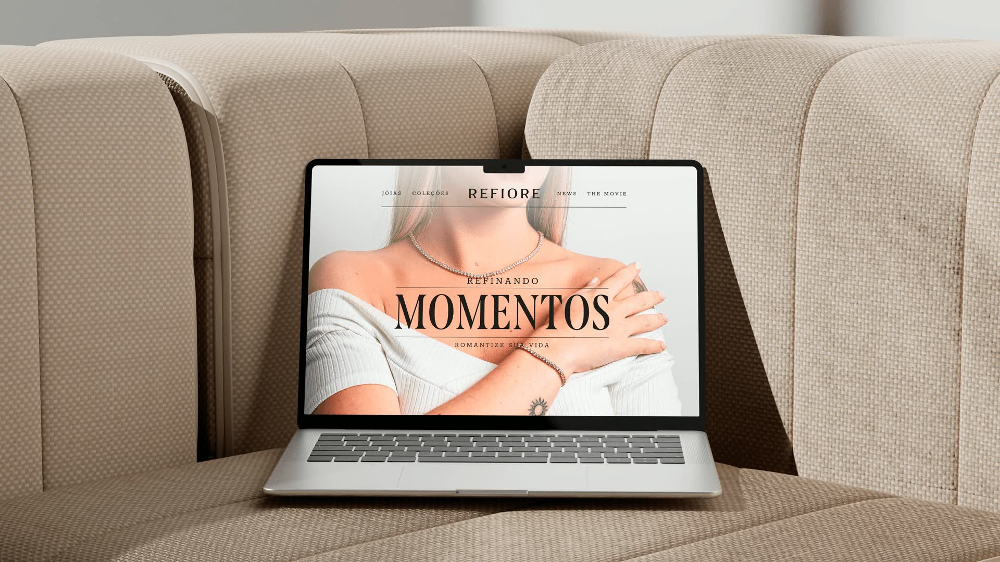
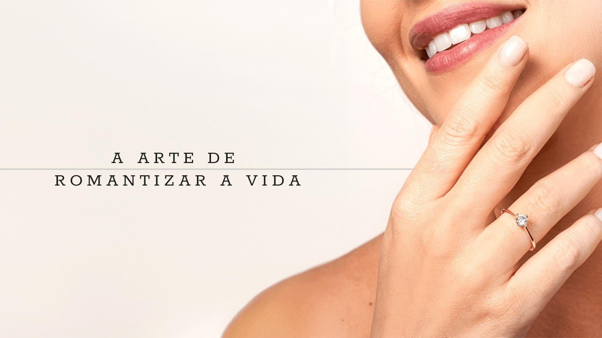
Créditos
Cliente
Refiore
Año
2024
Servicios
Identidad visual · Tono de voz · Papelería · Packaging · Piezas gráficas
Mi rol
Concepto y dirección creativa en equipo
Equipo
Uel Molon · Gabriel Motter · Gauja Lab · estudio